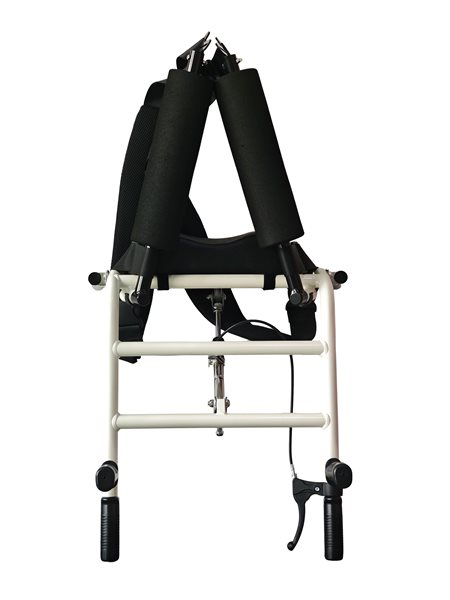
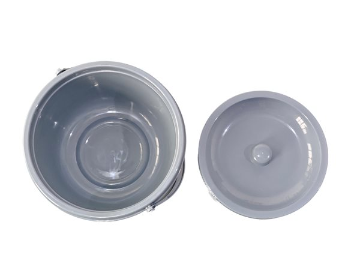
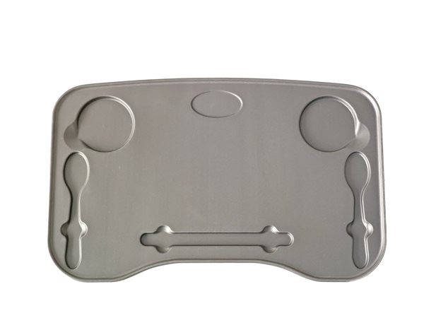

Patient Lift Transfer Chair Accessories, Explained | EMPCaring
A full patient lift transfer chair upgrade ecosystem — slings, commode pans, meal trays, pressure-reducing pads, battery packs, and custom OEM options. What each does, when you actually need it, and why investing in the right accessories is cheaper than buying a second device.
What's covered in this guide
- The three sling types and why material choice matters
- Commode pans: the highest-volume DME accessory in any care setting
- Meal trays, armrest pads, footrest extensions — pressure care and special needs
- Battery and charger strategy for electric models
- Custom OEM accessories for facilities and distributors
- How and where to order replacement parts when the factory is the best path
The biggest mistake facilities make with their patient lift transfer chair budget is buying the base device and skipping accessories — then discovering six months later that they need a sling for two residents, a meal tray for stroke patients, and a commode pan for every device. Accessories are cheaper than a whole new lift, but only if you plan for them upfront. This guide breaks down every category, explains when you need each one, and tells you which ones are factory-direct items vs third-party DME.
Sling Options
A sling is an accessory for residents who cannot sit upright on the patient lift transfer chair's own padded seat — typically residents with severe balance impairment, quadriplegia, or very high stroke severity. The sling clips onto two hooks on the lifting arm so the resident is fully supported in a seated position rather than sitting directly on the chair's seat.
Full-body sling
A full-body sling wraps around the entire torso and has four attachment points — two at the shoulders and two at the hips. This is the safest option for residents with no upper-body strength or very limited mobility. Material choices: nylon for general use, mesh for residents who perspire heavily or are incontinent and need frequent cleaning. Both are rated to 150 kg.
Toileting sling
A toileting sling has an open lower section so the caregiver can remove clothing and position the resident over the commode pan without removing the entire sling. This saves 2 to 3 minutes per toilet transfer — and more importantly, it keeps the resident supported the whole time. Any facility doing high-volume toilet transfers should have at least one toileting sling per patient lift transfer chair.
Universal sling
A universal sling works as both a toileting sling and a general-use sling. The lower attachment points can be disconnected for toileting and reconnected for general transfers. The trade-off is that it is slightly more complex for caregivers to configure, and for residents with very severe mobility needs, a dedicated full-body sling is safer.
All slings should be inspected monthly for stitching wear and replaced every 18 months regardless of condition. The maximum safe working load on every sling we supply is 150 kg — matching the rating of the lift itself. Read our transfer chair buying guide for more on when slings are required.

Commode Pan & Seat Adapter
The commode opening on a patient lift transfer chair is what makes it different from a standalone sling lift. And the commode pan is the accessory that makes that opening usable. This is the highest-volume accessory in any nursing home or home care setting — we recommend two pans per device: one in use, one being sanitised.
Our factory commode pans are made from thick ABS plastic, dishwasher safe at 85 degrees Celsius, have a 12-liter capacity, and include a lid and a removable handle for carrying and emptying. We also manufacture custom-fit seat adapters for facilities that need the commode opening to match their in-room toilet heights exactly. These adapters are a custom OEM item — order with your initial device purchase for same lead time.

Meal Tray
A meal tray clips onto the armrests of the patient lift transfer chair and lets the resident eat while seated in the chair rather than being transferred to a dining chair. The tray has a 5 cm raised lip around all edges to catch spills, a built-in cup holder, and is washable in the dishwasher.
This accessory is particularly important for stroke patients — residents who cannot sit upright long enough to transfer to a dining chair but need a stable surface for feeding. For facilities with specialised stroke care units, one meal tray per patient lift transfer chair is standard. The tray clips off in seconds when the resident needs to stand or transfer.

Armrest & Backrest Pads
Pressure ulcers (bedsores) are a constant concern for residents who sit for extended periods — and the armrests and backrest of a patient lift transfer chair are pressure points. The standard pads that ship with most devices are thin vinyl foam. Upgrading to memory foam pads reduces pressure by roughly 40 percent and is the single most effective low-cost upgrade for pressure injury prevention.
Our factory memory foam pads are 6 cm thick, have a breathable mesh top layer, and are easy to remove and sanitise. They fit our patient lift transfer chair armrests and backrest perfectly — third-party pads may not match the dimensions. Replace the pads every 12 months, or sooner if they flatten, crack, or show any sign of wear.
Battery & Charger (Electric Models Only)
Electric patient lift transfer chairs use a 14.8V 2.2 Ah lithium-ion battery pack. A full charge gives approximately 30 to 40 transfer cycles depending on resident weight and lift height. That sounds like a lot — but in a high-volume nursing home doing 60+ transfers per day per device, one battery is not enough.
Our recommendation for battery strategy:
- Home care (under 15 transfers/day) → one battery with nightly charging is sufficient.
- Nursing home (20 to 50 transfers/day) → two batteries per device — one charging, one in use.
- Hospital or high-volume clinic (over 50 transfers/day) → three batteries plus a 2-bay desktop charger.
Batteries degrade over time — expect 300 to 500 charge cycles before the capacity drops below 80 percent. Replace batteries every two years as part of your preventive maintenance schedule. Always buy replacement batteries from the original factory — third-party batteries may not match the voltage and could damage the actuator or charging circuit.
Footrest Extensions
Standard footrests on a patient lift transfer chair are adjustable between 40 cm and 55 cm from the seat. For residents taller than 180 cm (6 feet), their feet will hang or dangle when seated — which reduces circulation in the lower legs and creates discomfort during long transfers.
Our footrest extensions add 10 cm of adjustment range, bringing the total to 65 cm from the seat. They clip onto the existing footrest mount without tools or modification. If your facility has a high volume of taller residents, order these with the device — they are a simple fix that improves resident comfort significantly.
Mount & Wall Bracket
A wall bracket lets you store the patient lift transfer chair folded or upright against a wall between uses — useful in smaller rooms, home care bathrooms, or any setting where floor space is at a premium. The bracket is a simple steel mount that attaches to the back of the frame and clips to a wall plate.
Installation requires four wall screws into a stud or anchor — we include the hardware and the wall plate with every bracket order. Read our installation guide for the correct mounting height. This is a third-party DME accessory that any local supplier can provide if you don't need the factory version.
Custom OEM Accessories
One of the biggest advantages of sourcing directly from the factory is the ability to order custom OEM accessories — items that distributors simply cannot provide because they work with limited stock. The custom options we offer:
- Branded slings and seat pads. Embroider your facility logo or distributor brand on slings, armrest pads, and backrest pads. Minimum quantity: 100 units per design.
- Custom dimensions. Wider or narrower commode pans, custom seat depths for very tall or very short residents, special base widths for non-standard doorways.
- Custom colors. Most facilities order standard ivory or grey upholstery, but we can powder-coat frames and produce seat pads in custom colors for brand consistency.
- Specialty fabric. Anti-microbial upholstery for infection control environments, fire-resistant fabrics for hospital settings, or waterproof covers for outdoor use.
Custom OEM orders ship with the same 35-day lead time as standard units and the same 1-container MOQ. For distributors building their own private label line, custom accessories are a key differentiator — read our how to start a DME business guide for the full sourcing strategy.
How to Order Replacement Parts
When an accessory wears out or breaks, you have two paths: local DME supplier or factory-direct. Which is right depends on what you need:
Order local DME if:
- You need a replacement right now (same day or next day)
- You need a third-party sling, wall bracket, or meal tray
- Your facility already has an account with a local DME supplier
Order factory-direct if:
- You need a genuine OEM battery, charger, or actuator for electric models
- You need the exact sling or pad that was designed to fit your frame
- You are ordering more than five of an item — the volume discount from the factory more than covers shipping
- You need custom dimensions or OEM branding
FAQ
How many commode pans should I order per patient lift transfer chair?
Most nursing homes and home care settings keep two commode pans per device. One is in active use while the other is being cleaned and sanitised. Commode pans are made from durable ABS plastic, have a 12-liter capacity, and are dishwasher safe at hospital-grade temperatures. Replacing them every six months is standard practice.
What sling material is best for patient lift transfer chairs?
For general use, nylon slings are the standard — they are durable, hold up to 100 kg of weight, and resist tearing. For residents who sweat heavily or are incontinent, mesh slings are better because they allow air circulation and are easier to clean. Both materials are rated to 150 kg capacity and should be replaced every 18 months or if stitching shows any sign of wear.
Do I need a spare battery for an electric patient lift transfer chair?
If your electric lift is used for fewer than 15 transfers per day, one battery with a 4-hour nightly charge is enough. If you do more than 15 transfers, or if the battery is older than two years, add a second battery. Electric lifts operate for roughly 30 to 40 transfers on a full charge — depending on resident weight and lift height.
Can I order custom accessories for OEM branding?
Yes. Direct from the factory, we offer custom OEM accessories including branded slings with your logo, custom-colored commode pans, personalised seat pads with facility logos, and custom-dimension footrests for residents outside standard height ranges. Custom orders require a minimum quantity of 100 units and ship with the same 35-day lead time as standard models.
Need an accessories package with your lift?
We can bundle slings, commode pans, meal trays, and batteries at a discounted package rate when ordered with your patient lift transfer chair. Tell us your facility size and transfer volume and we'll recommend the exact accessory set.
Request a Package QuoteRelated guides:
This article covers standard accessories for patient lift transfer chairs. Always verify that any accessory you purchase is rated to the same safe working load as your lift — 150 kg / 330 lbs for our standard models. Replace worn accessories immediately.